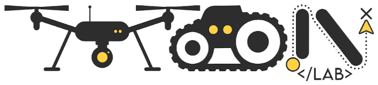

|
Prashant Gupta I'm an undergraduate in Electrical Engineering and Computer Science at IISER Bhopal. I work on control and robotics: modelling and controlling mobile robots, building hardware from scratch, and getting aerial and ground robots to work together. I'm currently an undergraduate researcher at Moon Lab, IISER Bhopal, with Prof. P. B. Sujit, where I lead the hardware side of our NIDAR multi-drone team and work on motion planning and off-road robot simulation. Before that, I was a research intern at IIT (BHU) Varanasi with Dr. Shyam Kamal, designing PID, LQR and MPC controllers and deploying them on a Quanser QBot. I'm currently looking for roles in robotics, drones and control. If you're hiring, email me. |
|
News
|
ResearchI'm interested in control, estimation and multi-robot systems, especially aerial-ground teams where what a robot can see and how it moves are tightly coupled, and in motion planning for robots in the field. |
|
|
COAST: Altitude as a Coupled Perception Variable in Shared-Camera Aerial-Ground Tracking
Shlok Mehndiratta, Divyam Sood, Prashant Gupta, Agniva Banerjee, Arijit Sen Advances in Control and Optimization of Dynamical Systems (ACODS), 2026 A UAV's downward camera is the only sensor guiding a ground robot. Flying higher sees more of the path but localizes more coarsely, so we derive in closed form the lowest altitude that keeps the path in view, which rises with path curvature, and validate it in ROS 2/Gazebo. |
Experience |

- NIDAR drone challenge (ongoing): I manage the hardware section of our autonomous multi-drone search-and-rescue team.
- Drone hardware: build, integrate and flight test drones; configure, calibrate and tune Pixhawk 2.4.8 and 6C flight controllers in QGroundControl.
- Robocop (ongoing): built the mechanical chassis of a four-wheel ground robot: 3D modelling, cutting, drilling and grinding.
- Built Prune-PRM, a faster motion planner, and an off-road ATV simulation that the lab uses as its testbed.
Modelled differential-drive kinematics, then designed and benchmarked PID, LQR and MPC controllers in Python for trajectory tracking. Deployed and tuned PID and LQR on Quanser QBot hardware, reducing steady-state error through iterative gain tuning.
Projects |
|
|
NIDAR: Autonomous Multi-Drone Search & Aid Delivery
Pixhawk 2.4.8 / 6C, QGroundControl, Moon Lab A team of autonomous drones that searches a 10-hectare flood zone, geotags up to 10 survivors and drops a 200 g aid kit near each one, with no external network and a 25 kg limit on all drones combined. I build and integrate the airframes and set up the flight controllers, including calibration, parameters and failsafes (return-to-launch, low battery, geofence, kill switch). |
|
|
Robocop: Four-Wheel Ground Robot
3D modelling, fabrication, Moon Lab A rugged four-wheel ground robot on an aluminium-extrusion frame. I helped build the chassis from the CAD model to the frame: 3D modelling, cutting sheet metal, drilling and grinding. This is a 4–5 month build; I will add updates here as the electronics come together. |
|
|
Prune-PRM: Faster Roadmap Planning by Batch Collision Pruning
Python, OMPL, Moon Lab code A custom OMPL motion planner that prunes roadmap collisions in batches within a locality bound. On 1000-node roadmaps it needs 3–5× fewer collision checks and plans 2.7× faster than classic PRM (115 ms vs. 312 ms), benchmarked against PRM, PRM* and FMT* under identical conditions. |
|
|
Off-Road ATV Simulation
ROS 2, Gazebo, LiDAR, RGB-D, IMU, Moon Lab A simulated all-terrain vehicle with rough terrain, suspension and a full IMU, LiDAR and RGB-D sensor stack. It serves as the lab's testbed for developing and testing off-road navigation controllers. |
|
|
PGNTA: 17-DOF Humanoid Robot
ESP32, PCA9685, MPU6050, servos project page A bipedal humanoid designed and built from scratch. An ESP32 coordinates 17 servos through a PCA9685 driver, with an MPU6050 IMU for orientation feedback. Used to study gait sequences, stability and actuator synchronisation. |
|
|
GPS-Denied Autonomous Navigation (UAV–UGV)
ROS 2 Jazzy, Gazebo Harmonic, LiDAR, OpenCV details A simulation pipeline where a UAV finds targets and guides a ground robot without GPS. Targets are detected with HSV segmentation and projected into 3D world coordinates using a pinhole camera model; RGB, LiDAR and odometry are fused for more robust localisation. |
|
|
Autonomous Mobile Robot (AMR)
ROS 2, Nav2, SLAM, Mechamind Labs A full-stack AMR covering perception, control and navigation, with SLAM-based mapping and Nav2 path planning. Subsystems are validated step by step in Gazebo before deployment on hardware. |
|
|
Scout: Surveillance UGV
ESP32, C++, WebSocket code A low-cost differential-drive ground robot with real-time teleoperation from a web page over WebSocket, including manual override and live sensor readings. |
Skills |
- Drones
- Pixhawk 2.4.8 & 6C, QGroundControl · airframe build and integration, sensor calibration, parameter tuning, failsafes, field flight testing
- Robotics
- ROS 2 (Jazzy), Gazebo Harmonic, Nav2, SLAM, OMPL, RViz
- Control
- PID, LQR, MPC, differential-drive kinematics, state machines
- Embedded
- ESP32, Arduino, PCA9685, MPU6050, ultrasonic/IR sensors, WebSocket teleoperation
- Mechanical
- Fusion 360, AutoCAD · chassis fabrication: cutting, drilling, grinding
- Software
- C, C++, Python, NumPy, scikit-learn, TensorFlow, Git, Docker, Linux
Leadership & Community |